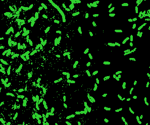
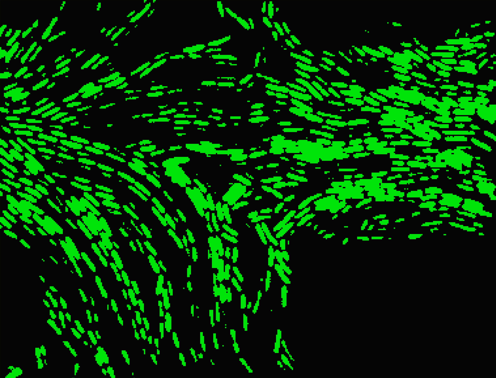

Aliivibrio fischeri:
Full digital guide

[Ref. 1] Micrograph showing fluorescently stained Aliivibrio fischeri cells.
| Gram staining | Gram-negative |
| Shape | Rod-shaped (bacillus) |
| Nutrition | Heterotrophic/ saphotrophic |
| Mobility | Motile using flagella |
| Environment | Temperate and subtropical aquatic environments |
| Living State | Exist either in free-living planktonic state OR in symbiosis with luminescent fish/squid |
[Ref. 2] Hawaiian bobtail squid (Euprymna scolopes)
[Ref. 3] A. fischeri cells in electron micrograph
A notable ecological interaction for A. fischeri is with E. scolopes, also known as the Hawaiian bobtail squid.
☀︎☀︎☀︎☀︎☀︎
During the day, the squid buries itself under sand for protection and filters bacteria inside itself through the water via two appendages on its body. Due to specifically-sized cilia on its appendages, only a single A. fischeri bacterium (and no other species!) is able to fit and stream inside. Once inside, it reaches the squid’s light organ, where it can reproduce and accumulate its population.
☽☽☽☽☽☽☽☽
At night, the squid must travel up the water column to hunt. The moon’s rays give it a shadow, placing it in a vulnerable position against potential predators. Through A. fischeri's bioluminescence, the squid also emits light, effectively erasing its shadow for any organisms underneath it.
- Shelter and protection (no longer in a vulnerable planktonic state)
- Receives nutrients shared by squid
- Must use significant amount of generate bioluminiscence
- Receives protective bioluminescence, allowing it to hunt and survive
- Must expend energy and nutrients for maintaining bacteria

[Ref. 4] Dense population of A. fischeri cells showing some bioluminescence.
- A. fischeri uses quorum sensing: a communication between bacterial cells that allows for specific gene expression in response bacterial density changes
- Bioluminescence only occurs in higher densities of bacteria, not in individual planktonic states
- Cells actively release and intake auto-inducers: molecules used to signal change in population density
- After a certain level of auto-inducers, bacteria alter regular gene express to produce blue-green light
- In planktonic states, auto-inducers diffuse out into the ocean
- Inside the light organ, threshold of auto-inducers is met due to high density of cells
- Cells begin to synchronously produce light!